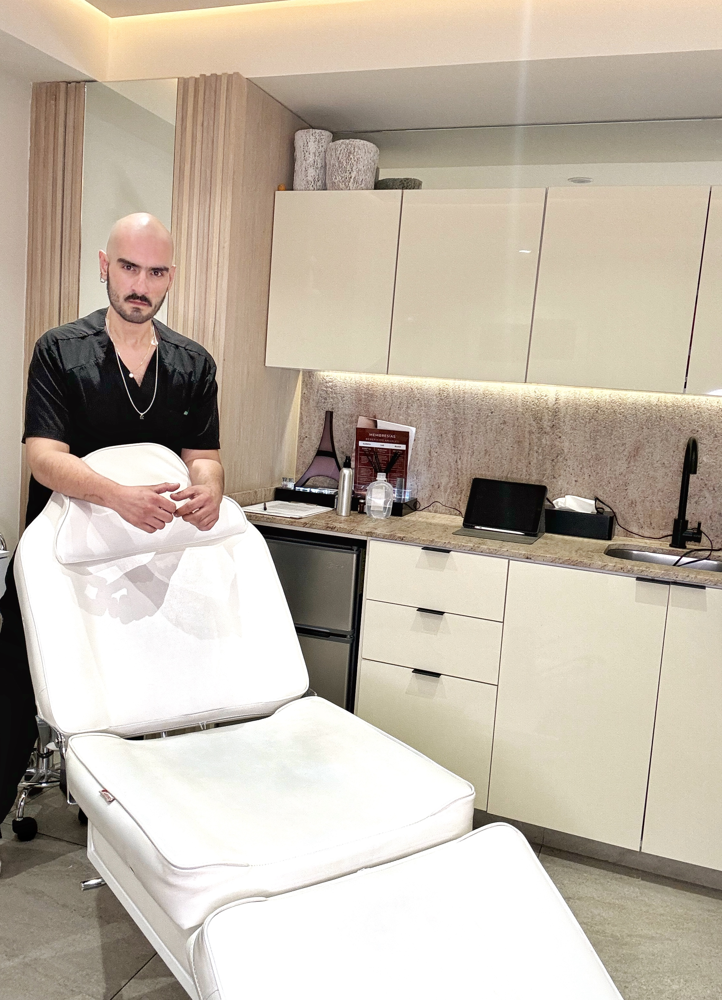
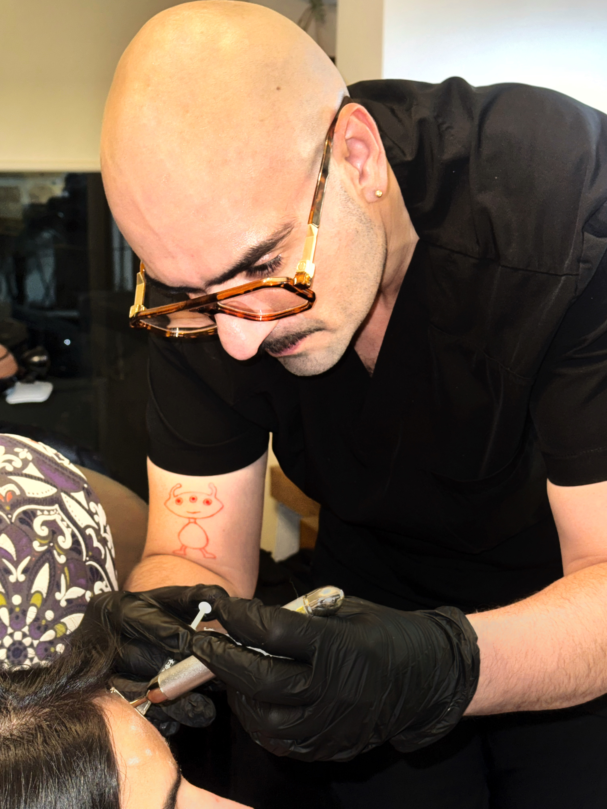
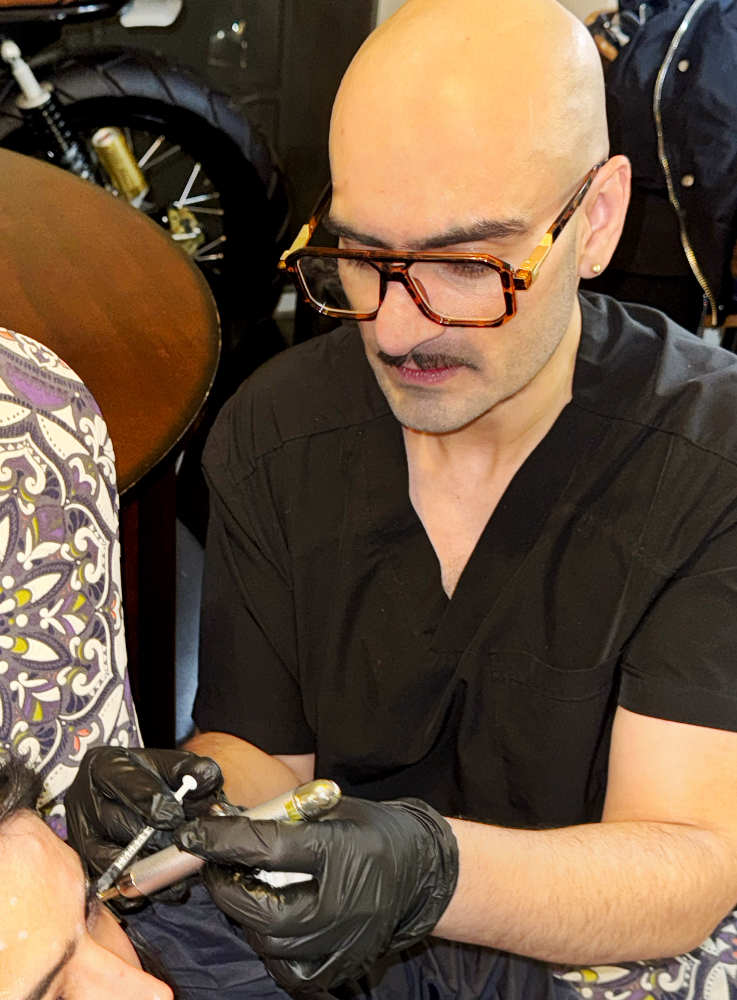
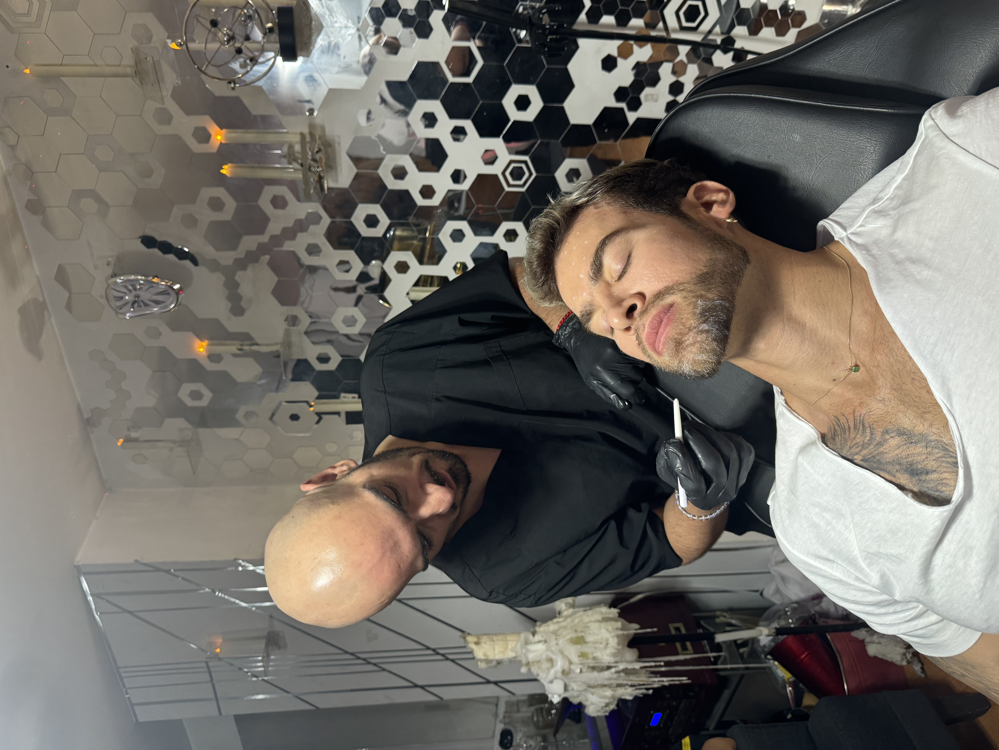
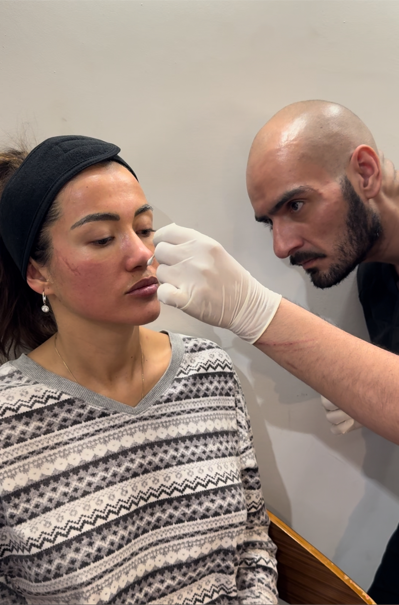

ESCUCHAR
Qué te preocupa, qué buscas y qué no quieres perder de ti.

La belleza no se crea.
Se protege.
La medicina estética no se trata de cambiar quién eres. Se trata de observar, entender y decidir qué vale la pena intervenir —y qué no.
Naturalidad no significa hacer menos.
Significa saber dónde detenerse.


No empiezo por una jeringa.
Empiezo por una valoración.
Casos clínicos reales. Por privacidad, la selección pública prioriza imágenes autorizadas y material que no comprometa la identidad del paciente. Los resultados son individuales y pueden variar.

Médico Estético
Cédula profesional 8926479
“Mi trabajo no es hacer que te parezcas a alguien más.”
Qué te preocupa, qué buscas y qué no quieres perder de ti.
Anatomía, proporciones, movimiento, piel y antecedentes relevantes.
Opciones, límites, riesgos y un plan individual cuando esté indicado.

Información clara sobre tratamientos, cuidados y seguridad. Sin promesas de resultados garantizados.
RESOLVER UNA DUDA →WHATSAPP
55 4907 0457 ↗
ATENCIÓN
Consultorio privado y servicio a domicilio, sujeto a disponibilidad.
BASE
Acámbaro, Guanajuato
PROFESIONAL
Dr. Víctor Rangel · Cédula profesional 8926479
Este sitio brinda información general y no sustituye una consulta médica. La idoneidad, riesgos, contraindicaciones y expectativas se revisan individualmente. Los resultados pueden variar.